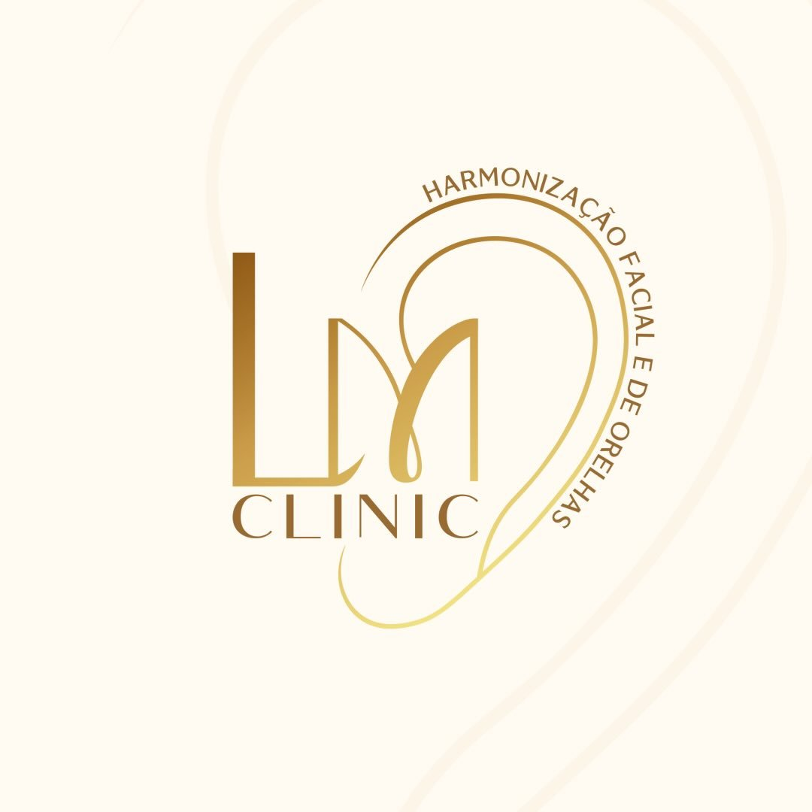

<!DOCTYPE html>
<html lang="pt-BR">
<head>
  <meta charset="UTF-8"><meta name="viewport" content="width=device-width, initial-scale=1.0">
  <title>Otomodelação em João Pessoa: Tudo que Você Precisa Saber | LM Clinic</title>
  <meta name="description" content="Guia completo sobre otomodelação em João Pessoa. Saiba como funciona, quem pode fazer, onde realizar, preço e resultados. LM Clinic - Dra. Luana Mendes.">
  <meta name="robots" content="index, follow">
  <link rel="canonical" href="https://landingpage-lm-clinic.vercel.app/otomodelacao-joao-pessoa">
  <link rel="icon" href="logo.jpg" type="image/jpeg">
  <script type="application/ld+json">{"@context":"https://schema.org","@type":"Article","headline":"Otomodelação em João Pessoa: Tudo que Você Precisa Saber","author":{"@type":"Person","name":"Dra. Luana Mendes"},"publisher":{"@type":"Organization","name":"LM Clinic"},"datePublished":"2025-06-01","mainEntityOfPage":"https://landingpage-lm-clinic.vercel.app/otomodelacao-joao-pessoa"}<\/script>
  <script type="application/ld+json">{"@context":"https://schema.org","@type":"FAQPage","mainEntity":[{"@type":"Question","name":"Onde fazer otomodelação em João Pessoa?","acceptedAnswer":{"@type":"Answer","text":"A LM Clinic, em Jardim Oceania, João Pessoa (PB), é especializada em otomodelação. A Dra. Luana Mendes realiza o procedimento com protocolo individualizado."}},{"@type":"Question","name":"Quanto custa otomodelação em João Pessoa?","acceptedAnswer":{"@type":"Answer","text":"R$ 2.800 no Pix ou R$ 3.000 em até 10x sem juros no cartão na LM Clinic."}},{"@type":"Question","name":"A otomodelação em João Pessoa é segura?","acceptedAnswer":{"@type":"Answer","text":"Sim. Quando realizada por profissional habilitado em consultório adequado, é um procedimento seguro com risco mínimo e resultado imediato."}}]}<\/script>
  <link href="https://fonts.googleapis.com/css2?family=Playfair+Display:wght@400;600;700&family=Inter:wght@300;400;500;600&display=swap" rel="stylesheet">
  <style>*,*::before,*::after{box-sizing:border-box;margin:0;padding:0;}:root{--bg:#FAFAF8;--white:#FFF;--black:#1A1A1C;--gold:#C9A96E;--gold-light:#F0E4CC;--gold-dark:#A07840;--gray:#6B7280;--gray-light:#F5F5F3;--border:#E8E8E4;--wa:#25D366;--wa-dark:#128C7E;}html{scroll-behavior:smooth;}body{font-family:Inter,sans-serif;background:var(--bg);color:var(--black);line-height:1.7;font-size:16px;}h1,h2,h3{font-family:"Playfair Display",serif;line-height:1.25;}a{text-decoration:none;color:var(--gold-dark);}a:hover{color:var(--gold);}nav{position:fixed;top:0;left:0;right:0;z-index:200;background:rgba(255,255,255,0.96);backdrop-filter:blur(12px);border-bottom:1px solid var(--border);padding:12px 24px;display:flex;align-items:center;justify-content:space-between;}.nav-logo img{height:44px;width:auto;}.nav-cta{display:flex;align-items:center;gap:7px;background:var(--wa);color:#fff;padding:9px 18px;border-radius:50px;font-size:13px;font-weight:600;}.nav-cta:hover{background:var(--wa-dark);color:#fff;}.nav-cta svg{width:15px;height:15px;fill:#fff;}.breadcrumb{padding:100px 24px 0;max-width:800px;margin:0 auto;font-size:13px;color:var(--gray);}.breadcrumb a{color:var(--gray);}.breadcrumb span{margin:0 6px;}.article-wrap{max-width:800px;margin:0 auto;padding:32px 24px 80px;}.article-tag{display:inline-block;background:var(--gold-light);color:var(--gold-dark);font-size:12px;font-weight:700;letter-spacing:1px;text-transform:uppercase;padding:5px 14px;border-radius:50px;margin-bottom:16px;}h1{font-size:clamp(28px,5vw,42px);margin-bottom:16px;}.article-meta{font-size:13px;color:var(--gray);display:flex;gap:16px;flex-wrap:wrap;margin-bottom:24px;}.article-intro{font-size:18px;color:var(--gray);line-height:1.75;padding:20px 24px;border-left:3px solid var(--gold);background:var(--gray-light);border-radius:0 8px 8px 0;}h2{font-size:clamp(22px,3vw,30px);margin:48px 0 16px;}h3{font-size:20px;margin:32px 0 12px;}p{margin-bottom:18px;color:#374151;}ul,ol{margin:0 0 20px 24px;}li{margin-bottom:8px;color:#374151;}strong{color:var(--black);}.highlight-box{background:var(--gold-light);border-radius:12px;padding:24px 28px;margin:32px 0;}.highlight-box p{margin:0;font-size:15px;}.highlight-box strong{color:var(--gold-dark);}.cta-inline{background:var(--black);border-radius:16px;padding:32px;margin:40px 0;text-align:center;}.cta-inline h3{color:#fff;font-size:22px;margin-bottom:10px;}.cta-inline p{color:#aaa;font-size:15px;margin-bottom:24px;}.btn-wa{display:inline-flex;align-items:center;gap:9px;background:var(--wa);color:#fff;padding:15px 28px;border-radius:50px;font-size:15px;font-weight:700;box-shadow:0 4px 20px rgba(37,211,102,0.35);}.btn-wa:hover{background:var(--wa-dark);color:#fff;}.btn-wa svg{width:20px;height:20px;fill:#fff;}.faq-section{margin:48px 0;}.faq-item{border:1px solid var(--border);border-radius:12px;margin-bottom:10px;overflow:hidden;background:var(--white);}.faq-btn{width:100%;padding:18px 22px;background:none;border:none;cursor:pointer;display:flex;align-items:center;justify-content:space-between;font-family:Inter,sans-serif;font-size:15px;font-weight:500;color:var(--black);text-align:left;gap:12px;}.faq-btn:hover{background:var(--gray-light);}.faq-ico{font-size:20px;color:var(--gold);transition:transform 0.25s;flex-shrink:0;}.faq-item.open .faq-ico{transform:rotate(45deg);}.faq-body{max-height:0;overflow:hidden;transition:max-height 0.3s ease,padding 0.3s;}.faq-body.open{max-height:300px;padding:0 22px 18px;}.faq-body p{font-size:14px;color:var(--gray);margin:0;}.related-articles{background:var(--gray-light);border-radius:16px;padding:28px;margin:48px 0;}.related-articles h3{font-size:18px;margin-bottom:16px;}.related-links{display:flex;flex-direction:column;gap:10px;}.related-link{display:flex;align-items:center;gap:10px;font-size:14px;font-weight:500;color:var(--black);padding:10px 14px;background:var(--white);border-radius:8px;border:1px solid var(--border);}.related-link::before{content:"→";color:var(--gold);font-weight:700;flex-shrink:0;}.related-link:hover{border-color:var(--gold);color:var(--black);}footer{background:#111;color:#666;padding:32px 24px;text-align:center;font-size:13px;line-height:1.8;}footer strong{color:#aaa;}footer a{color:var(--gold);}.wa-fab{position:fixed;bottom:24px;right:24px;z-index:300;}.wa-fab a{display:flex;align-items:center;gap:8px;background:var(--wa);color:#fff;padding:13px 20px;border-radius:50px;font-size:14px;font-weight:700;box-shadow:0 4px 20px rgba(37,211,102,0.5);white-space:nowrap;}.wa-fab a:hover{color:#fff;}.wa-fab svg{width:22px;height:22px;fill:#fff;flex-shrink:0;}@media(max-width:600px){.wa-fab a span{display:none;}.wa-fab a{padding:14px;border-radius:50%;}}</style>
</head>
<body>
<nav><a href="/"><div class="nav-logo"></div></a><a href="https://wa.me/5583993201036?text=Ol%C3%A1%21+Vim+pelo+site+e+gostaria+de+agendar+uma+otomodela%C3%A7%C3%A3o" target="_blank" rel="noopener" class="nav-cta"><svg viewBox="0 0 24 24"><path d="M17.472 14.382c-.297-.149-1.758-.867-2.03-.967-.273-.099-.471-.148-.67.15-.197.297-.767.966-.94 1.164-.173.199-.347.223-.644.075-.297-.15-1.255-.463-2.39-1.475-.883-.788-1.48-1.761-1.653-2.059-.173-.297-.018-.458.13-.606.134-.133.298-.347.446-.52.149-.174.198-.298.298-.497.099-.198.05-.371-.025-.52-.075-.149-.669-1.612-.916-2.207-.242-.579-.487-.5-.669-.51-.173-.008-.371-.01-.57-.01-.198 0-.52.074-.792.372-.272.297-1.04 1.016-1.04 2.479 0 1.462 1.065 2.875 1.213 3.074.149.198 2.096 3.2 5.077 4.487.709.306 1.262.489 1.694.625.712.227 1.36.195 1.871.118.571-.085 1.758-.719 2.006-1.413.248-.694.248-1.289.173-1.413-.074-.124-.272-.198-.57-.347z"/><path d="M12 0C5.373 0 0 5.373 0 12c0 2.126.557 4.126 1.527 5.858L.057 23.743a.5.5 0 0 0 .612.612l5.885-1.47A11.943 11.943 0 0 0 12 24c6.627 0 12-5.373 12-12S18.627 0 12 0zm0 21.75A9.745 9.745 0 0 1 6.502 20.2l-.36-.214-3.732.932.949-3.72-.234-.374A9.715 9.715 0 0 1 2.25 12C2.25 6.615 6.615 2.25 12 2.25S21.75 6.615 21.75 12 17.385 21.75 12 21.75z"/></svg>Avaliação Gratuita</a></nav>
<div class="breadcrumb"><a href="/">Início</a><span>›</span><a href="/#artigos">Artigos</a><span>›</span>Otomodelação em João Pessoa</div>
<div class="article-wrap">
  <span class="article-tag">Guia Completo</span>
  <h1>Otomodelação em João Pessoa: Tudo que Você Precisa Saber</h1>
  <div class="article-meta"><span>✍️ Dra. Luana Mendes</span><span>📍 Jardim Oceania, JP</span><span>⏱️ 8 min de leitura</span></div>
  <p class="article-intro">Se você está buscando <strong>otomodelação em João Pessoa</strong>, este guia tem tudo: o que é o procedimento, como funciona, quem pode fazer, onde realizar com segurança, quanto custa e o que esperar do resultado. Leitura de 8 minutos que pode economizar horas de pesquisa.</p>

  <h2>O que é otomodelação?</h2>
  <p>A otomodelação — também chamada de otoplastia sem corte — é um procedimento minimamente invasivo para correção de orelhas em abano (proeminentes). Utilizando anestesia local e fios inabsorvíveis inseridos por dentro da cartilagem, o profissional reposiciona a orelha na posição correta sem nenhuma incisão externa.</p>
  <p>Não há corte, não há ponto externo e não há cicatriz visível. O resultado aparece no mesmo dia e é definitivo.</p>

  <h2>Por que fazer otomodelação em João Pessoa?</h2>
  <p>João Pessoa conta hoje com profissionais especializados neste procedimento, o que dispensa a necessidade de viajar para outras capitais. A <strong>LM Clinic</strong>, localizada no Jardim Oceania, é referência em otomodelação na Paraíba — com foco exclusivo em harmonização facial e de orelhas.</p>
  <p>Fazer o procedimento localmente também facilita o acompanhamento pós-procedimento e o retorno de revisão, que fazem parte do protocolo.</p>

  <h2>Como é realizado o procedimento em João Pessoa?</h2>
  <ol>
    <li><strong>Agendamento da avaliação gratuita:</strong> pelo WhatsApp, você solicita fotos (frente, perfil e posterior) e agenda a consulta.</li>
    <li><strong>Avaliação presencial:</strong> a Dra. Luana examina a orelha, confirma a indicação e explica o procedimento em detalhes.</li>
    <li><strong>Procedimento (40–60 min):</strong> anestesia local, passagem dos fios inabsorvíveis por dentro da cartilagem, sem cortes.</li>
    <li><strong>Resultado imediato:</strong> ao sair do consultório, a orelha já está corrigida. Acomodação progressiva nas semanas seguintes.</li>
    <li><strong>Retorno de acompanhamento:</strong> consulta de revisão para garantir o resultado ideal.</li>
  </ol>

  <h2>Quem pode fazer otomodelação?</h2>
  <p>O procedimento é indicado para quem tem:</p>
  <ul>
    <li>Orelhas proeminentes (abano) — unilateral ou bilateral</li>
    <li>Ausência ou pouca definição da anti-hélice</li>
    <li>Assimetria entre as orelhas</li>
    <li>Desejo de resultado sem cirurgia</li>
  </ul>
  <p>Pode ser realizado a partir dos <strong>10 anos de idade</strong>. Contraindicado em casos de inflamação, infecção ativa ou cirurgia recente na região.</p>

  <div class="highlight-box"><p><strong>Importante:</strong> Para descobrir se você é candidato ideal à otomodelação, o caminho mais rápido é enviar fotos pelo WhatsApp para uma pré-avaliação gratuita.</p></div>

  <h2>Quanto custa a otomodelação em João Pessoa?</h2>
  <p>Na LM Clinic, o investimento é:</p>
  <ul>
    <li><strong>R$ 2.800</strong> no Pix (pagamento à vista)</li>
    <li><strong>R$ 3.000</strong> no cartão em até <strong>10x sem juros</strong></li>
  </ul>
  <p>O valor inclui avaliação prévia, o procedimento completo com anestesia local e acompanhamento pós-procedimento. Para comparação, a otoplastia cirúrgica custa entre R$ 8.000 e R$ 15.000, sem contar os custos hospitalares.</p>

  <div class="cta-inline">
    <h3>Pronto para começar?</h3>
    <p>Avaliação gratuita com a Dra. Luana Mendes em Jardim Oceania, João Pessoa.</p>
    <a href="https://wa.me/5583993201036?text=Ol%C3%A1%21+Vim+pelo+site+e+gostaria+de+agendar+uma+otomodela%C3%A7%C3%A3o" target="_blank" rel="noopener" class="btn-wa"><svg viewBox="0 0 24 24"><path d="M17.472 14.382c-.297-.149-1.758-.867-2.03-.967-.273-.099-.471-.148-.67.15-.197.297-.767.966-.94 1.164-.173.199-.347.223-.644.075-.297-.15-1.255-.463-2.39-1.475-.883-.788-1.48-1.761-1.653-2.059-.173-.297-.018-.458.13-.606.134-.133.298-.347.446-.52.149-.174.198-.298.298-.497.099-.198.05-.371-.025-.52-.075-.149-.669-1.612-.916-2.207-.242-.579-.487-.5-.669-.51-.173-.008-.371-.01-.57-.01-.198 0-.52.074-.792.372-.272.297-1.04 1.016-1.04 2.479 0 1.462 1.065 2.875 1.213 3.074.149.198 2.096 3.2 5.077 4.487.709.306 1.262.489 1.694.625.712.227 1.36.195 1.871.118.571-.085 1.758-.719 2.006-1.413.248-.694.248-1.289.173-1.413-.074-.124-.272-.198-.57-.347z"/><path d="M12 0C5.373 0 0 5.373 0 12c0 2.126.557 4.126 1.527 5.858L.057 23.743a.5.5 0 0 0 .612.612l5.885-1.47A11.943 11.943 0 0 0 12 24c6.627 0 12-5.373 12-12S18.627 0 12 0zm0 21.75A9.745 9.745 0 0 1 6.502 20.2l-.36-.214-3.732.932.949-3.72-.234-.374A9.715 9.715 0 0 1 2.25 12C2.25 6.615 6.615 2.25 12 2.25S21.75 6.615 21.75 12 17.385 21.75 12 21.75z"/></svg>Quero minha avaliação gratuita</a>
  </div>

  <div class="faq-section">
    <h2>Perguntas frequentes sobre otomodelação em João Pessoa</h2>
    <div class="faq-item"><button class="faq-btn" onclick="toggleFaq(this)">Onde fazer otomodelação em João Pessoa?<span class="faq-ico">+</span></button><div class="faq-body"><p>Na LM Clinic, em Jardim Oceania (Av. Fernando Luiz Henriques dos Santos), especializada em otomodelação e harmonização de orelhas. A Dra. Luana Mendes atende com protocolo individualizado.</p></div></div>
    <div class="faq-item"><button class="faq-btn" onclick="toggleFaq(this)">Quanto tempo leva para agendar?<span class="faq-ico">+</span></button><div class="faq-body"><p>Você entra em contato pelo WhatsApp, envia as fotos para pré-avaliação e o agendamento é feito conforme a disponibilidade da agenda. Respondemos em minutos.</p></div></div>
    <div class="faq-item"><button class="faq-btn" onclick="toggleFaq(this)">Quanto custa otomodelação em João Pessoa?<span class="faq-ico">+</span></button><div class="faq-body"><p>R$ 2.800 no Pix ou R$ 3.000 em até 10x sem juros no cartão na LM Clinic.</p></div></div>
    <div class="faq-item"><button class="faq-btn" onclick="toggleFaq(this)">A otomodelação em João Pessoa é segura?<span class="faq-ico">+</span></button><div class="faq-body"><p>Sim. Quando realizada por profissional habilitado com protocolo adequado, é um procedimento com risco muito baixo e resultado imediato. A Dra. Luana Mendes é especialista na técnica.</p></div></div>
  </div>

  
      <!-- REFERÊNCIAS CIENTÍFICAS -->
      <div style="background:var(--gray-light);border-radius:16px;padding:28px;margin:48px 0;border-left:4px solid var(--gold);">
        <h3 style="font-family:"Playfair Display",serif;font-size:18px;margin-bottom:16px;color:var(--black);">📚 Referências Científicas</h3>
        <p style="font-size:13px;color:var(--gray);margin-bottom:16px;font-style:italic;">Este artigo é baseado em evidências científicas publicadas em periódicos revisados por pares.</p>
        <ol style="margin:0 0 0 20px;display:flex;flex-direction:column;gap:10px;">
          <li style="font-size:13px;color:#374151;line-height:1.6;">Pham, T.T. et al. (2020). <em>Outcomes and Complications of the Mustardé Otoplasty: A "Good-Fast-Cheap" Technique for the Prominent Ear Deformity.</em> Aesthetic Surgery Journal Open Forum. <a href="https://pubmed.ncbi.nlm.nih.gov/33133954/" target="_blank" rel="noopener" style="color:var(--gold-dark);">PubMed PMID: 33133954</a></li>
          <li style="font-size:13px;color:#374151;line-height:1.6;">Grayson, J.W. et al. (2020). <em>Minimally Invasive Technique for Correction of Prominent Ear.</em> Plastic and Reconstructive Surgery Global Open. <a href="https://pmc.ncbi.nlm.nih.gov/articles/PMC7419105/" target="_blank" rel="noopener" style="color:var(--gold-dark);">PMC7419105</a></li>
          <li style="font-size:13px;color:#374151;line-height:1.6;">Raunig, H. et al. (2005). <em>Minimally invasive otoplasty.</em> HNO. <a href="https://pubmed.ncbi.nlm.nih.gov/15719248/" target="_blank" rel="noopener" style="color:var(--gold-dark);">PubMed PMID: 15719248</a></li>
          <li style="font-size:13px;color:#374151;line-height:1.6;">Kaya, B. et al. (2025). <em>Effectiveness and Safety of Non-Surgical Otoplasty Using APTOS Threads: A Retrospective Study.</em> Journal of Cosmetic Dermatology. <a href="https://pubmed.ncbi.nlm.nih.gov/41367351/" target="_blank" rel="noopener" style="color:var(--gold-dark);">PubMed PMID: 41367351</a></li>
          <li style="font-size:13px;color:#374151;line-height:1.6;">Sociedade Brasileira de Cirurgia Plástica. <em>Tratamento fechado da orelha em abano.</em> Revista Brasileira de Cirurgia Plástica (RBCP). <a href="https://www.rbcp.org.br/details/1315/tratamento-fechado-da-orelha-em-abano" target="_blank" rel="noopener" style="color:var(--gold-dark);">RBCP</a></li>
          <li style="font-size:13px;color:#374151;line-height:1.6;">Faraj, A.A. et al. <em>Otomodelação: Uma Técnica Inovadora Para a Correção da "Orelha de Abano".</em> Aesthetic Orofacial Science (AhOf). <a href="https://ahof.emnuvens.com.br/ahof/article/view/160" target="_blank" rel="noopener" style="color:var(--gold-dark);">AhOf Journal</a></li>
          <li style="font-size:13px;color:#374151;line-height:1.6;">Limandjaja, G.C. et al. (2009). <em>Complications of otoplasty: a literature review.</em> Journal of Plastic, Reconstructive & Aesthetic Surgery. <a href="https://www.ncbi.nlm.nih.gov/pubmed/19231295" target="_blank" rel="noopener" style="color:var(--gold-dark);">PubMed</a></li>
        </ol>
      </div>

      <div class="related-articles"><h3>Leia também</h3><div class="related-links"><a href="/orelha-de-abano-sem-cirurgia" class="related-link">Orelha de abano tem cura sem cirurgia?</a><a href="/otomodelacao-vs-otoplastia" class="related-link">Otomodelação vs Otoplastia: qual a diferença?</a><a href="/quanto-custa-otomodelacao" class="related-link">Quanto custa a otomodelação em João Pessoa?</a><a href="/como-corrigir-orelha-de-abano" class="related-link">Como corrigir orelha de abano sem cirurgia: guia 2025</a></div></div>
</div>
<footer><p><strong>LM Clinic · Dra. Luana Mendes</strong></p><p>Av. Fernando Luiz Henriques dos Santos - Jardim Oceania, João Pessoa - PB</p><p><a href="tel:+5583993201036">(83) 99320-1036</a> · <a href="https://www.instagram.com/luanamendessclinic/" target="_blank">@luanamendessclinic</a></p></footer>
<div class="wa-fab"><a href="https://wa.me/5583993201036?text=Ol%C3%A1%21+Vim+pelo+site+e+gostaria+de+agendar+uma+otomodela%C3%A7%C3%A3o" target="_blank" rel="noopener"><svg viewBox="0 0 24 24"><path d="M17.472 14.382c-.297-.149-1.758-.867-2.03-.967-.273-.099-.471-.148-.67.15-.197.297-.767.966-.94 1.164-.173.199-.347.223-.644.075-.297-.15-1.255-.463-2.39-1.475-.883-.788-1.48-1.761-1.653-2.059-.173-.297-.018-.458.13-.606.134-.133.298-.347.446-.52.149-.174.198-.298.298-.497.099-.198.05-.371-.025-.52-.075-.149-.669-1.612-.916-2.207-.242-.579-.487-.5-.669-.51-.173-.008-.371-.01-.57-.01-.198 0-.52.074-.792.372-.272.297-1.04 1.016-1.04 2.479 0 1.462 1.065 2.875 1.213 3.074.149.198 2.096 3.2 5.077 4.487.709.306 1.262.489 1.694.625.712.227 1.36.195 1.871.118.571-.085 1.758-.719 2.006-1.413.248-.694.248-1.289.173-1.413-.074-.124-.272-.198-.57-.347z"/><path d="M12 0C5.373 0 0 5.373 0 12c0 2.126.557 4.126 1.527 5.858L.057 23.743a.5.5 0 0 0 .612.612l5.885-1.47A11.943 11.943 0 0 0 12 24c6.627 0 12-5.373 12-12S18.627 0 12 0zm0 21.75A9.745 9.745 0 0 1 6.502 20.2l-.36-.214-3.732.932.949-3.72-.234-.374A9.715 9.715 0 0 1 2.25 12C2.25 6.615 6.615 2.25 12 2.25S21.75 6.615 21.75 12 17.385 21.75 12 21.75z"/></svg><span>Avaliação Gratuita</span></a></div>
<script>function toggleFaq(btn){const item=btn.closest(".faq-item");const body=item.querySelector(".faq-body");const isOpen=item.classList.contains("open");document.querySelectorAll(".faq-item").forEach(el=>{el.classList.remove("open");el.querySelector(".faq-body").classList.remove("open");});if(!isOpen){item.classList.add("open");body.classList.add("open");}}<\/script>
</body></html>